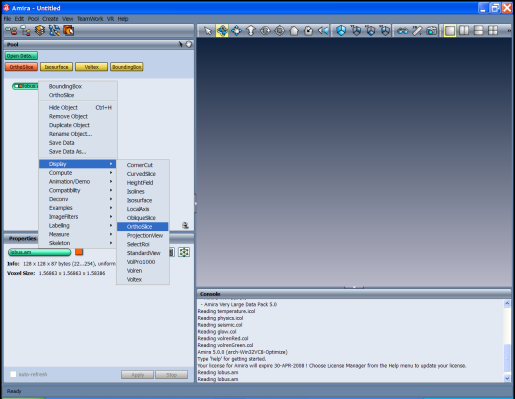

In order to attach a module to a data set, click on the green icon using the right mouse button. A popup menu appears containing all modules that can be used to process this particular type of data.